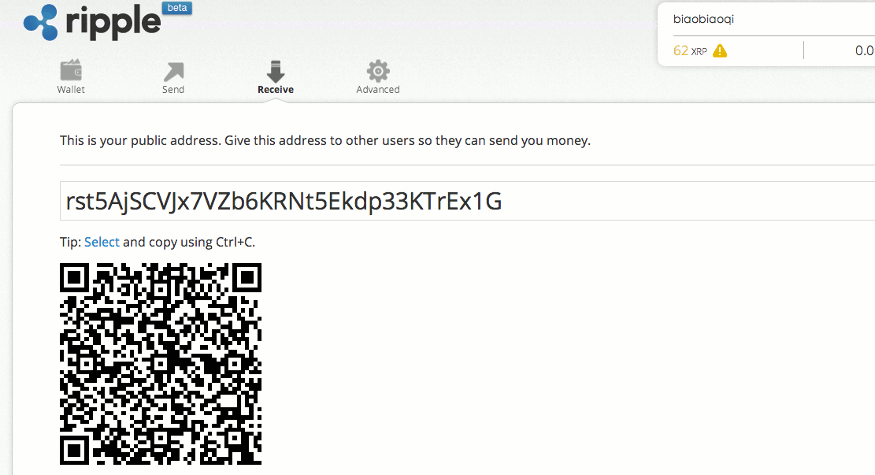
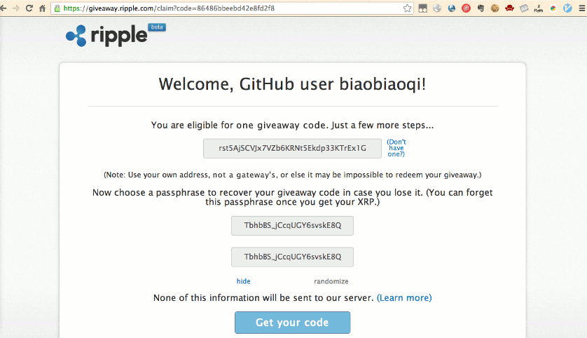

刚看到有个帖子后面，用30RMB 换取 2013 年 5 月 1 日前使用过的 github 账号得到的一个验证码。出于好奇，仔细围观了该贴，发现原来 lz 是利用信息不队称在揽入赠送给 github 用户的 ripple 币。而实际上，给 github 用户赠送的 2020 的 ripple 币按当时汇率这算人民币大概价值 120 元！
Ripple 是一种电子的虚拟货币，与人尽皆知的比特币类似，它也立足于创建一种去中心化的的虚拟货币系统。实际上，Ripple 项目的起源时间甚至早于比特币，04 年就有了初版。比较特别的是，Ripple 承诺货币总量为 1000 亿，且永不增发，也就是不能像比特币那样挖矿。Ripple 被缩写为 XRP，有人称之为人品币（RP 币），这也一语双关的表明了它的实现本身所依赖的信任机制。
更多信息，参考如下网页：
Ripple 最近给开发者发福利:
Any GitHub account older than May 1, 2013, 00:00:00 UTC that has some public code-writing activity before that date is eligible to receive 2020 XRP.
Additionally, accounts which have watched or starred any of Ripple’s major repositories (ripple-client, ripple-lib, or rippled) as of October 3, 2013, 21:15:00 UTC are eligible for twice the amount.
(These rules are subject to change without notice.)
凡是 2013 年 5 月 1 日前注册且有公开代码读写的 Github 用户将获得 2020XRP，如果在 2013 年 10 月 3 日前 star 或者 watch 了 ripple 在 Github 的官方账号上的任何 repo 的，获得的 XRP 将翻倍！
如果你满足，就可以通过如下流程获得这些 XRP 啦。
注册 如果你没有 Ripple 的注册账户，请先 注册 。
注册流程没有什么特别的。最后需要记录下自己的钱包（Wallet）地址，待会儿领取 XRP 要用到。在 Ripple 网页顶栏的 Received 标签下。比如我的是 rst5AjSCVJx7VZb6KRNt5Ekdp33KTrEx1G
注意，这里注册完毕后不需要激活。之后提取到 XRP 后账号本身自然会被激活的。实际上，只要账号中 Ripple 币的总额大于 100 就 OK，而我们能从这次活动中提取至少 2020XRP 呢。
验证 Github 账号，提取 XRP 点击链接 https://giveaway.ripple.com/，在这里通过 Github 授权领取 XRP。具体流程流程是：
Github 授权
点击 Log in with Github 按钮，一步步走下去。（前提是确定自己的 Github 账号满足了领取的要求）
生成提取码（giveaway code）
授权完毕后，来到如下界面：
在第一个输入框中，输入自己的钱包地址（在注册一步中记下的地址），下面两行的 passphrase 大概用于在忘记提取码时找回，一般的，点击 randomize 直接随机生成一个即可。
最后，点击 Get your code，即可获得一长串的提取码。这个编码已经与你的钱包地址绑定，只有你的 ripple 账号能拿到这笔钱了。
我的提取码如下:
This is your giveaway code. Don't lose it!
sYBhVavSjbtp45GLNA8NnxYtK7FEUUEmUFM5g4DS5uTzrucCuV8wv6RnmETCjNmzo1FNXVqrULdZCmnDU5oLGbHwjXNqwmJsd1ZqjCNrqzyBxTp6JaRuc6Kwu33495dSQgaY4B3DzHtsNjL8sTyGgcMhuQcK1mSz4fpQXKpRWjAohYXmB8FP5MhpCymuLhW1jFw77sySh1s3sHRkJ4BBdT9KH2GgNwzWmQi57o5wMEbNWFfJe8ctun3ieD1WLnA6L5L4MmLYhdnirPvKmSxg4sEiw9VAPpz5nSg3RaA1PHTdKCokcvzVbbAnsCYWRKF5ZZo1mx3zzNRuwrQRgU1jPM7KUi7fUNpVz2aRofXmrovn5KQ8EYC1HwqiXB3HnPR7GJ84f9Q4oQ8q1sT
提取 XRP 之后，依然在原来的链接里，在如下方框里输入之前生成的提取码，点击 Redeem（兑现）,提取 XRP 过程完毕。
兑换为人民币 XRP 兑换 CNY（人民币）的过程，需要在网关中进行。这里的网关（gateway）跟网络中的网关没关系，是 Ripple 货币体系中重要的一环，可以理解为交易中心。
中国有两个交易中心：RippleChina 和 RippleCN。不同的网关成交价格都可能不相同，建议对比后再做交易。
RippleChina 和 RippleCN 都提供了相应的教程：
注意，在使用 XRP 买入 CNY 时，需要设定为``XRP/CNY``，那个框是可以自己输入的，而不是下拉选择的。
提现到支付宝 最后一步提现到支付宝，建议使用 RippleCN，RippleChina 竟然对我收费 5 块，而 RippleCN 是承诺免费的。